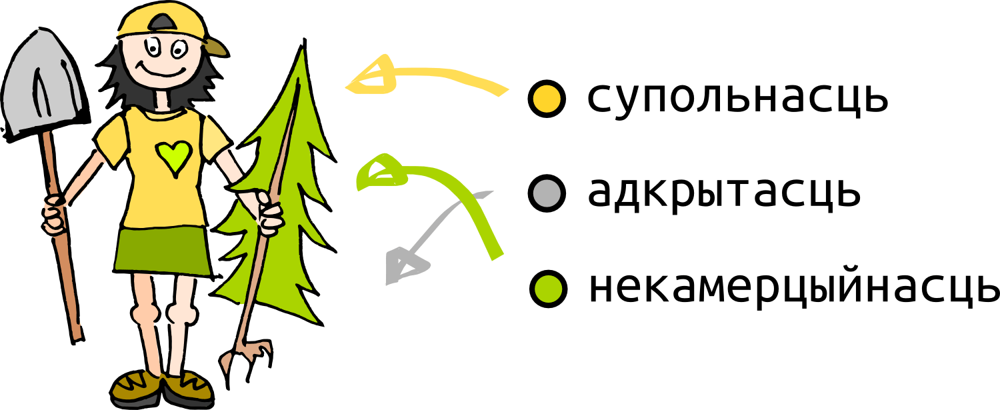
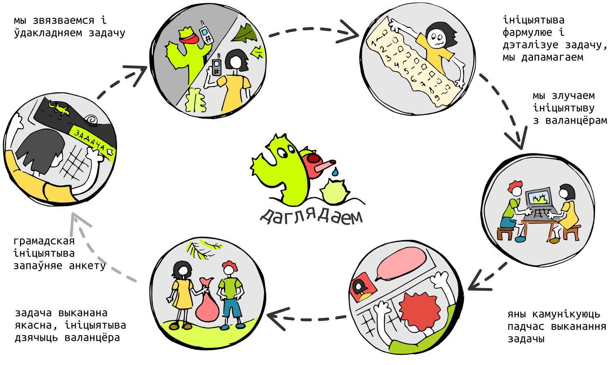

What is the Initiative?
Initiative is a civil non-commercial organization, project or a group that functions for the sake of society.
Starting work with initiatives we pay an attention to the three main values:
- The initiative should be non-commercial, this means that its agency firstly is aimed for the improvement of a society.
- For us it is important to support those initiatives which have or aspire after creating an association and developing inner self-government.
- Initiative that needs support is opened both for potential members and for the Digital Laboratory Team.

How can we help?

- To repair or create a web-site.
- To make a design of a poster, banner, logotype, etc..
- To write a mobile application.
- To reinstall an operating system.
- To translate a web-service or to make a lesson about a digital security.
- And also we address a number of other problems!
When we receive your form we go through the next steps:
- We call you and find out the required task in.
- We start to search a volunteer or start to do the task by ourselves if sources from our team are free.
- Look after the work progress of the task and help to clarify appearing misunderstandings with the volunteer.

How are we working on?
- Firstly, we create an association of IT-volunteers who agree to help with your task at the right moment.
- Secondly, any initiative appealing to us we consider as a partner. In other words, we solve problems together during the interaction. It is necessary to remember that we are not a service or a firm for creating sites.
- Finely, as a result of our help, a volunteer and an initiative are mutually transfer and receive knowledge in maintaining its digital infrastructure’s support in future, for example, an initiative can speak with IT-volunteers, formulate tasks for them.